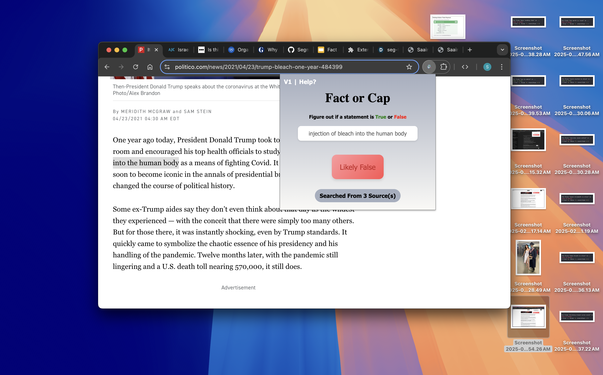
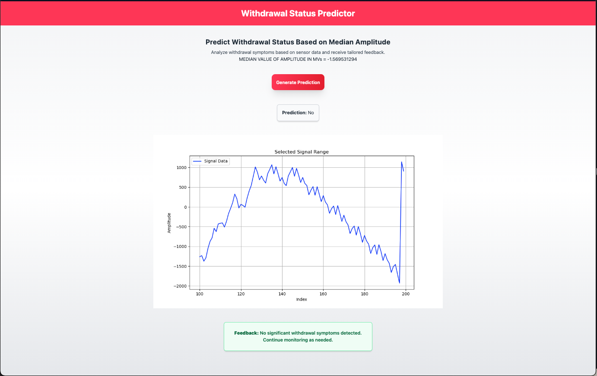
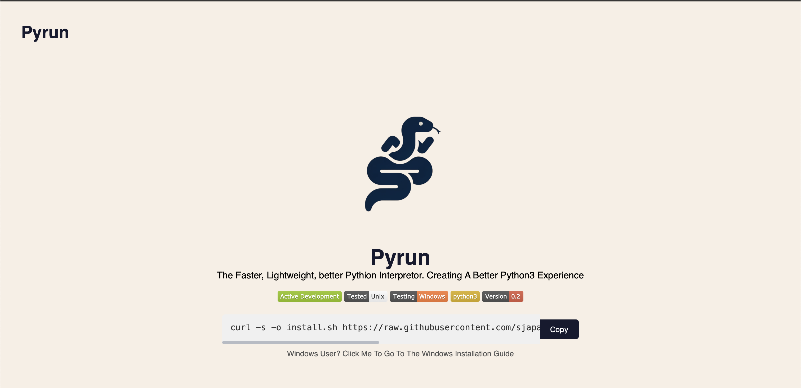
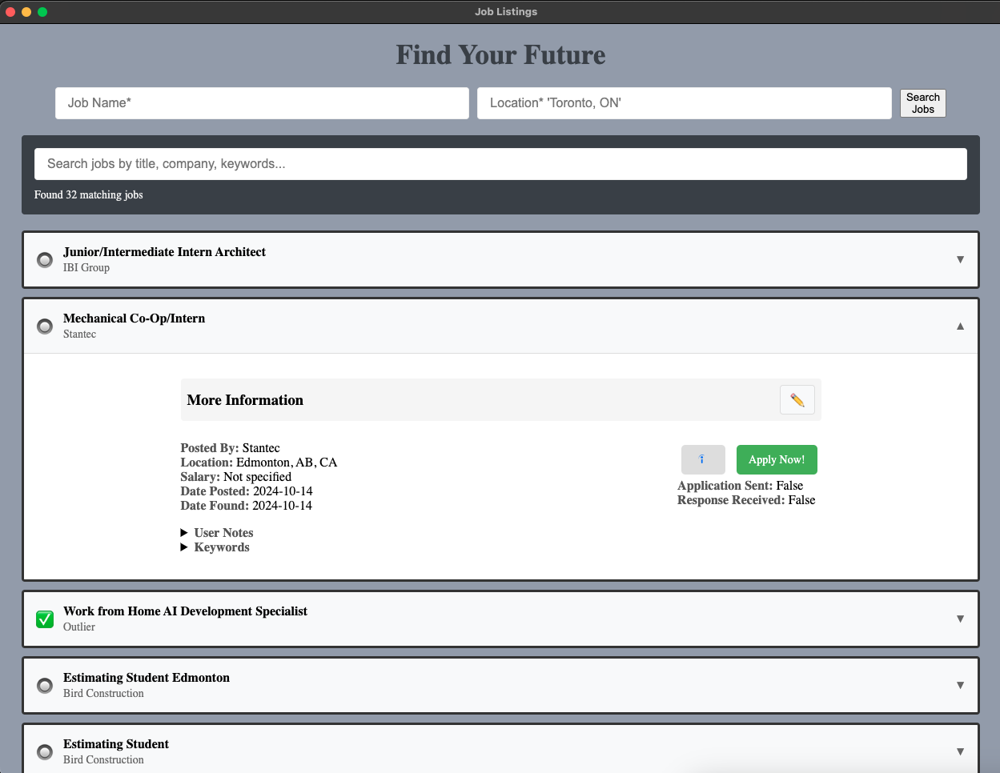

Saaim Japanwala
Computer Science & Psychology @ University of Alberta
📍🇨🇦 Alberta, Canada
.png)
.png)
• Currently Developing CarbonScript!
About Me
👋 Hello World, my name is Saaim Japanwala. Im a full time student at The University of Alberta graduating class of 2027. Pursuing a bachelors in Computing Science and Psychology.
My journey in tech started back in highschool, and since then, I have been hooked to the world of coding and software development. Lets create a world where technology becomes our best asset to solve our problems.
Technology & Skills
Languages
Python3 JavaScript HTML5 CSS C PowershellFrameworks
Electron.JS React.JS DjangoUtilities
Git Node.JS DockerExperience & Education
2025 - Present
🌱 | Wiki Developer
iGEM UAlberta 2025.
Contributing developing the iGEM UAlberta 2025 wiki
Feb 15 - 17, 2025
👨💻 | Full Stack Developer
Segmentation Faulters; HackED 2025.
Created a chrome extention that checks if information on the internet is authentically
verified or a fabrication. Levereged the Google Fact Check API, alongside multiple
algorithms to ensure the accuracy of the information.
Nov 14 - 17, 2024
👨💻 | Software Developer
BrainByte; NatHACKS 2024.
Implemented neurotechnology to solve problems in the medical field. Using OpenBCI
monitoring tools and Gemini LLM, developed a system to help diagnose patients with
alchohol withdrawl symptoms.
2023 - Present
🎓 | Full Time Student
University of Alberta
Started at University of Alberta, Studying Psychology and Computer Science
Projects

Fact or Cap - The Truth Checking Extention
2025
The internet has a problem. Its full of misinformation and false content. With Fact or
Cap you can effeciently and securely check if a claim is authentic or fabricated.
With trusted sources.

Alchohol Withdrawal Monitoring System
2024
With Reference to the CIWA Scale, Created a monitoring device with a front end and back end
to catch alcohol withdrawal symptoms before it's too late.

Pyrun, Python3 Runner Addon
2024
The old Python interpretor is boring, why not add a couple of features that make coding
python easy and fun!

CarbonScript
2025
CarbonScript is a fast, structured, and intuitive scripting language designed for efficiency
and ease of use. With a unique syntax and built-in functions, CarbonScript makes programming
more readable, flexible, and dynamic.

Career Trail
2024
Using webscrapers, and data analysis, created a tool that helps users find jobs more
efficiently, saving time and effort by integrating data scraping, organization, and display
in one intuitive platform.